暴走の恐怖
ログイン状態のブラウザで意図しない決済をしてしまったら？ 重要なファイルを誤って削除したら？ AI に自分の PC をそのまま渡すには、責任が重すぎる。
CUA / CuaBot · OSS Agent Infrastructure · Issue № 04/27
賢くなったAIエージェントを実務に投入するとき、最大の壁は「知能」ではなく身体だ。誰のPCを使う？ 暴走したら？ ベンダーが変わったら？ ——CUA / CuaBot は、その身体問題を OSS で一気に解く。Docker サンドボックスと Xpra による Co-op で、人間とAIが同じデスクトップを邪魔せず共存できる作業環境を提供する。
npx cuabot でサンドボックス起動 / Co-op Computer-Use / MCP 統一 SDK / Trajectory 記録 / Cua-Bench 評価 / Apache-2.0。

CUA / CuaBot は、ホストPCにAIを直接触らせない。代わりに、Docker コンテナ内に立ち上げた Ubuntu 仮想デスクトップを「AI専用の身体」として差し出し、Xpra でそのウィンドウだけを手元の画面にストリーミングする。AIの操作はすべてサンドボックスの内側で起き、ホストとは隔離される。
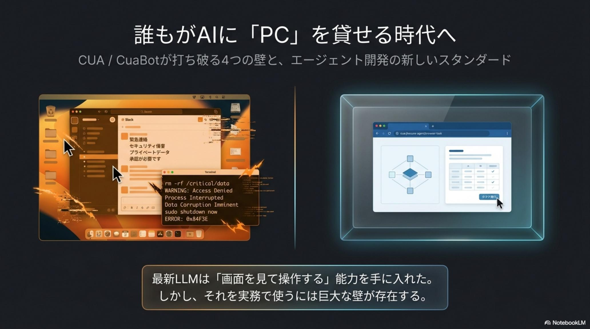
SaaS企業のサトシは、Claude Code に「APIのない社内システムへのデータ入力」と「ブラウザでのE2Eテスト」を任せたい。しかし AI に PC を触らせようとすると、 4 つの壁 が同時に立ちはだかった。
ログイン状態のブラウザで意図しない決済をしてしまったら？ 重要なファイルを誤って削除したら？ AI に自分の PC をそのまま渡すには、責任が重すぎる。
従来の RPA 系では、AI がマウスを動かす間、人間はただ画面を見守るしかない。AI が作業している間、自分は仕事ができない——これでは導入する意味が薄い。
Claude 専用、OpenAI 専用、自作エージェント専用——PC操作の実装は毎回バラバラ。スクリーンショット取得もクリック制御も、エージェントごとに作り直す。
AI がエラーを起こしても「なぜそのボタンを押したのか」の軌跡が残らない。改善のためのデータも、強化学習の素材も集まらず、同じ失敗を繰り返す。
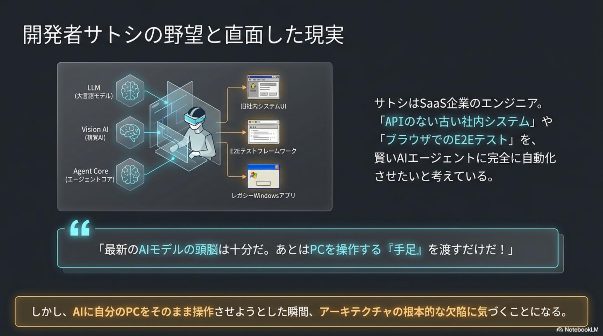
CUA / CuaBot のアプローチは、これまでの RPA や Computer Use 系ツールと根本的に違う。AI にサトシのPCを貸さない。代わりに、AI 専用の作業机を隣に用意する。たった一行で、その机が立ち上がる。
サトシがターミナルに npx cuabot と打ち込むだけで、Ubuntu ベースの仮想デスクトップが立ち上がる。AI のクリックも入力もすべてコンテナの内側で完結し、ホスト PC のファイルにもネットワークにも到達しない。「壊れていい机」を AI に渡すことで、初めて自動化のテストが安心して回せるようになる。
CUA / CuaBot の最大の革新は、マルチプレイヤー機能にある。Xpra でサンドボックス内のウィンドウだけを手元の画面にネイティブ表示し、AI には独立した専用カーソルとキーボードフォーカスを与える。これで人間と AI が、同じデスクトップ体験の上で互いを邪魔せずに作業できる。
サンドボックスのアプリは、まるで自分の PC で動くアプリのように、手元のディスプレイに溶け込む。AI が裏で黙々とブラウザを操作している間、サトシは別ウィンドウで普通にコードを書ける。AI の作業を覗き、必要なら手動で助け舟を出すこともできる、いわば「AI とのペアプロ」だ。
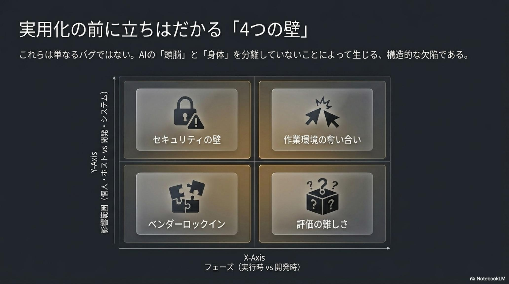
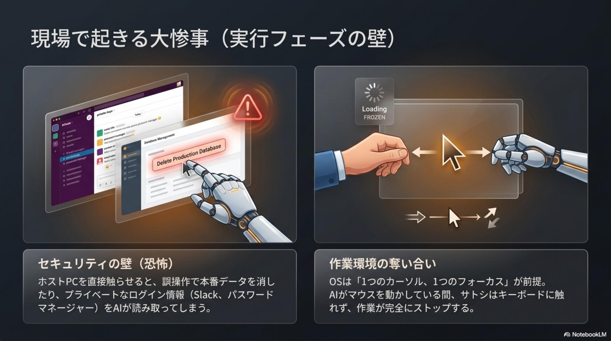
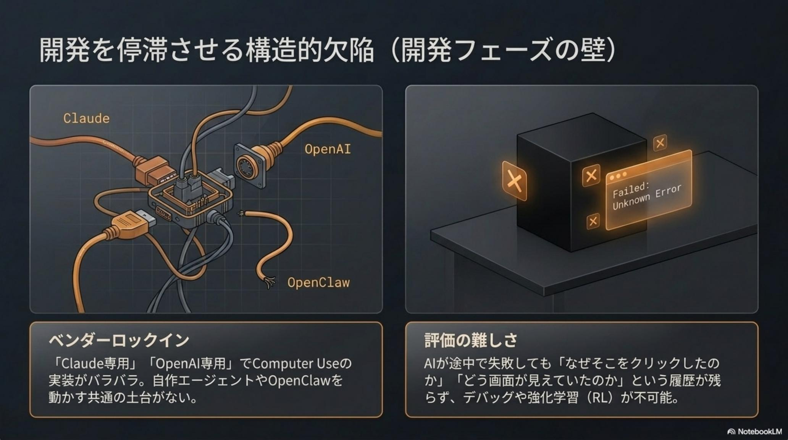
サトシは、複雑な作業には Claude Code、オープンな実験には OpenClaw、独自業務には自作エージェントを使い分ける。CUA は、これらすべてに同じ操作インターフェースを提供する。鍵は MCP（Model Context Protocol）と統一 Python SDK だ。
CUA は、画面取得・座標クリック・キーボード入力・スクロール・ウィンドウ操作などのプリミティブを、エージェント非依存の標準 API として公開する。同じスクリプトが、Claude でも OpenAI でも自作モデルでも動く。エージェントを差し替えても、PC操作のコードは作り直さなくていい。
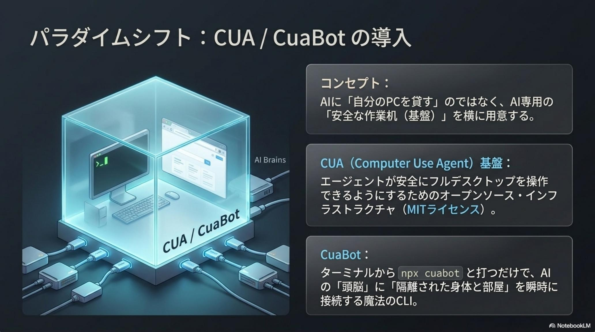
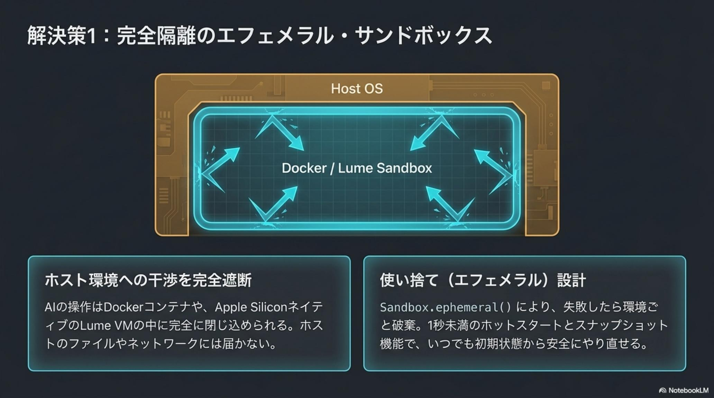
AI はタスクに必ず失敗する。問題は、その失敗が分析可能な形で残るかだ。CUA は、AI のすべての行動——スクリーンショット、API 呼び出し、クリック座標、入力テキスト——を Trajectory（軌跡）として自動記録する。これがデバッグと再訓練の燃料になる。
記録された Trajectory は、ただの動画ログではない。状態 / 行動 / 報酬がセットで残るため、強化学習や DPO でモデルを再訓練する素材になる。CUA はさらに Cua-Bench という評価基盤を提供し、「社内システムでの操作精度」を継続的に測れるようにしている。
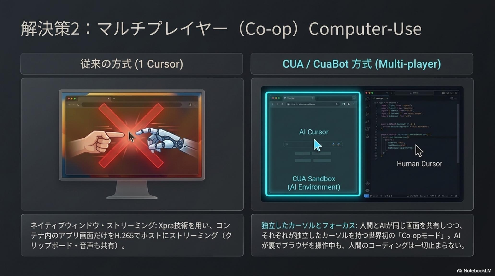
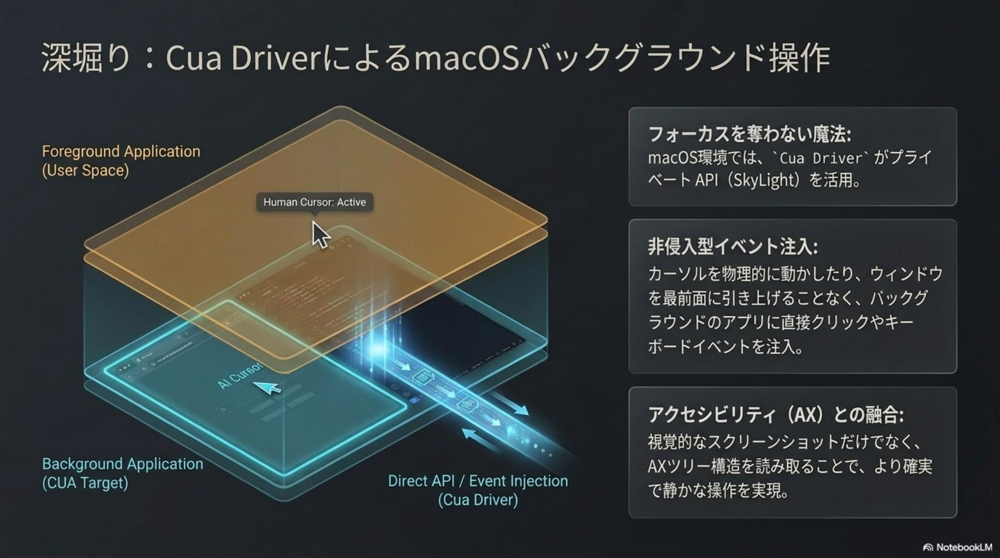
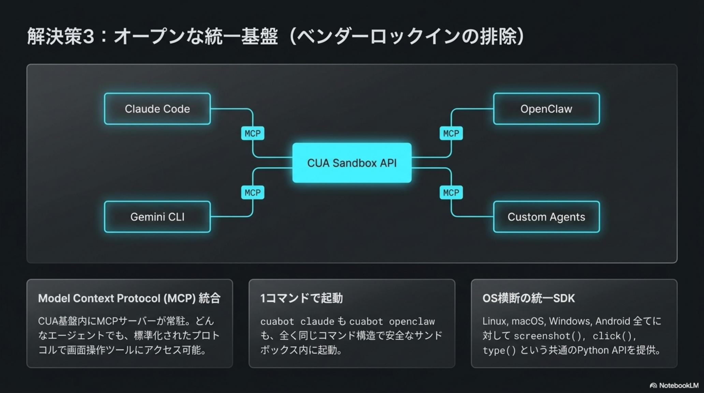
CUA / CuaBot が変えるのは、AI モデルそのものではない。「賢い AI」を「実務で使える AI」へ橋渡しするインフラのレイヤーだ。3 者にとって、何が変わるのかを具体に落とすとこうなる。
新しいエージェントを試すたびに PC 操作層を書き直す必要がなくなる。同じ MCP / SDK のままモデルを差し替え、Trajectory で挙動の変化を測れる。E2E テストや QA の自動化が、実装地獄から解放される。
ホスト PC や社内ネットワークに直接 AI を触れさせない構成を、OSS でガバナンス可能な形で作れる。サンドボックス内のログがすべて残るため、監査や事故時の追跡にも耐える。クラウド型の Computer Use サービスへの依存も避けられる。
Trajectory が安定して取れる環境は、強化学習や Computer-Use 特化の SFT / DPO にとって貴重な訓練データそのものだ。Cua-Bench を共通スコアとして使えば、モデル間の比較も再現性を持って行える。
CUA / CuaBot は OSS なので、検証コストはほぼゼロだ。クラウド型の Computer Use を待つよりも、自社の AI エージェントに「手足」を一度授けて、何ができないかを見にいく方が早い。
npx cuabot で立ち上げ、手元のデスクトップに AI 用ウィンドウが現れる挙動をまず体感する。Docker と Xpra の依存だけ確認しておく。
Claude Code から MCP サーバ経由で接続するか、自作エージェントに Python SDK を組み込む。「スクショを撮る → クリックする」という最小ループを作る。
E2E テスト、社内システムへのデータ入力、定型的なリサーチ——どれか一つに絞って、AI の成功と失敗を Trajectory として残す。
プロンプトやモデルを変えるたびに、Cua-Bench で操作精度の前後差分をスコア化する。感覚ではなく数字で改善ループを回す。
AI 競争の次の舞台は 「賢さ」 ではなく 「身体と環境」。OSS が、その身体を誰でも借りられるものにする。— CUA / CuaBot 公式資料 / Apache-2.0 License
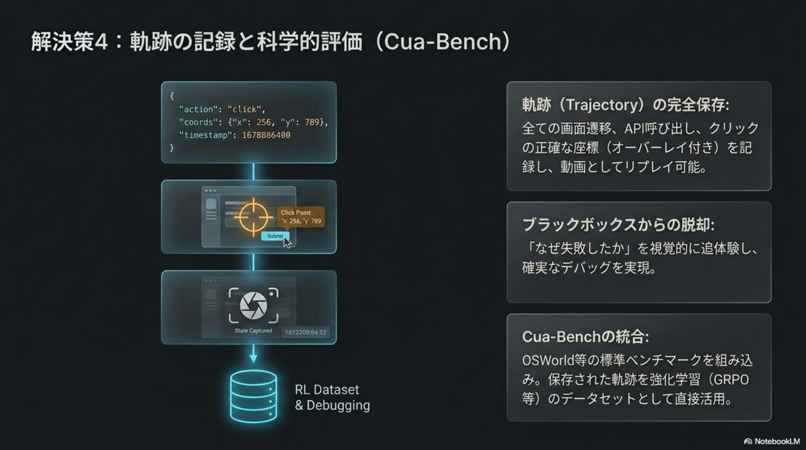
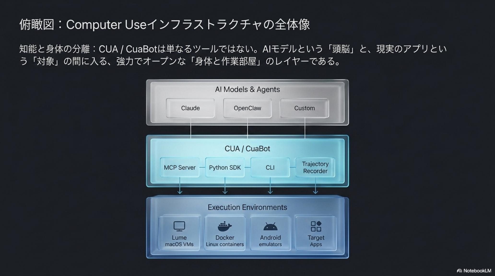
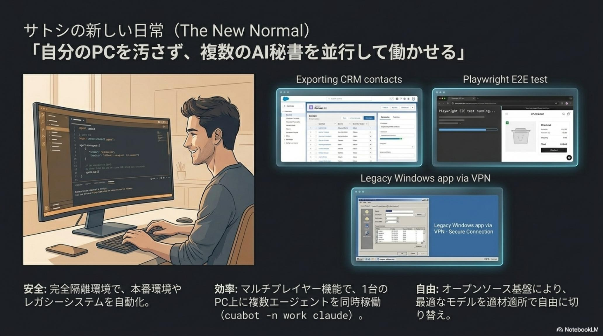
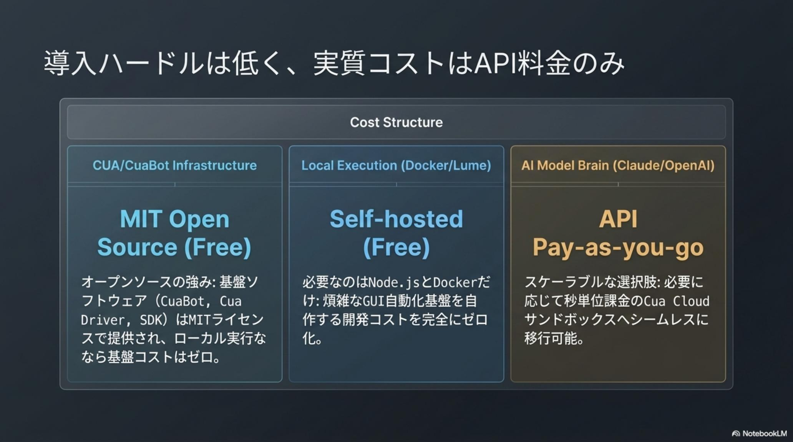
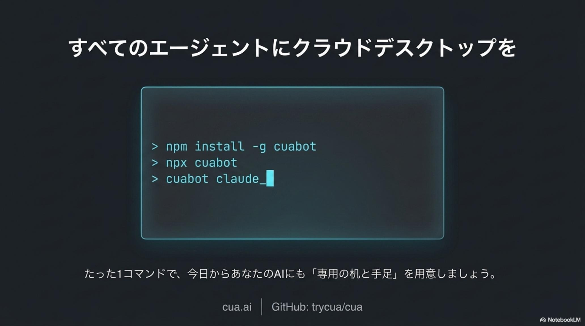